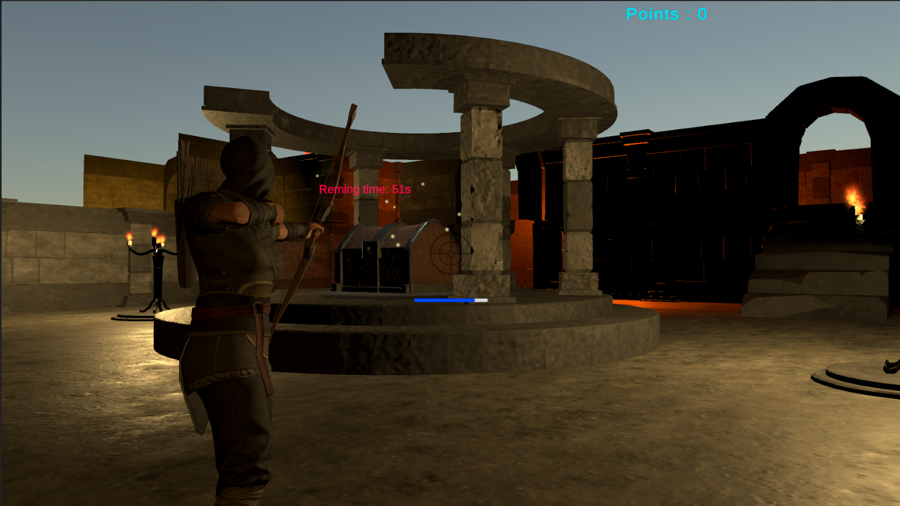
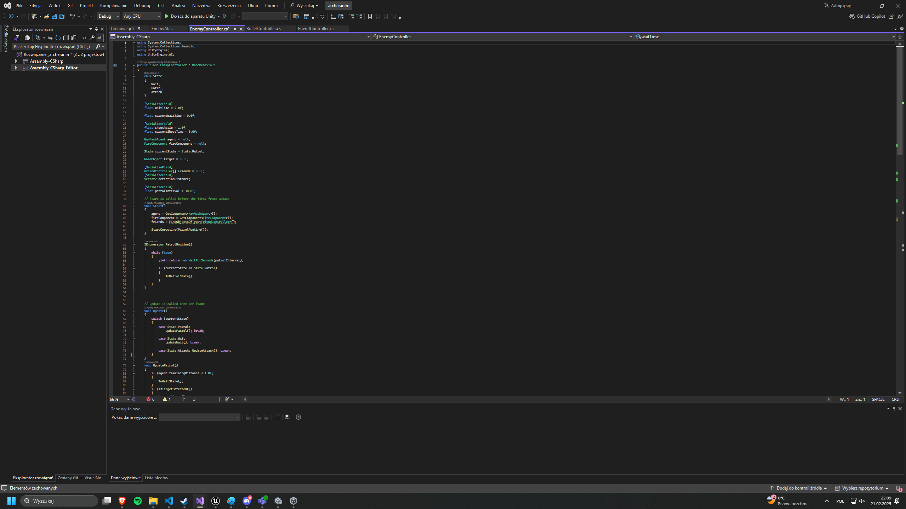
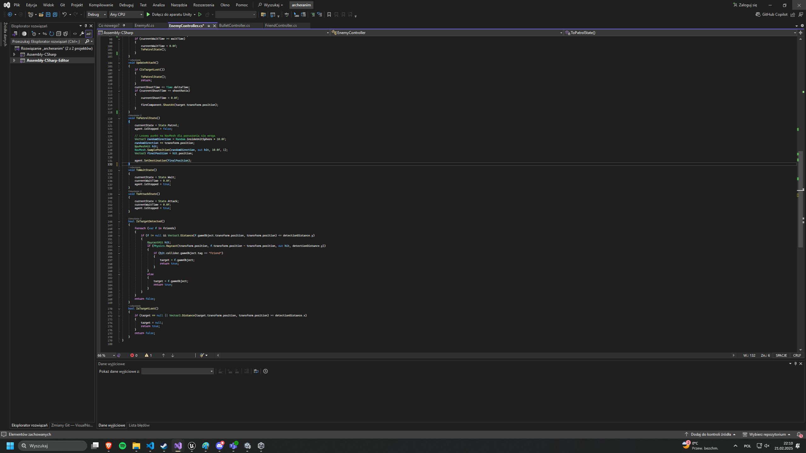
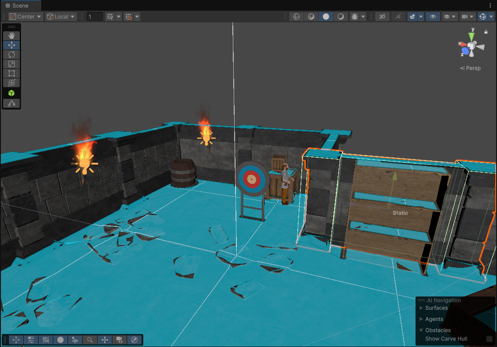

Project Description
The project is a third-person archery prototype developed in Unity. The player character is animated using Mixamo animations and features a bow shooting mechanic with damage calculation and health management. The enemy AI is implemented using a finite state machine (FSM) with three states: patrol, wait, and attack. Enemy movement is handled through Unity’s NavMesh system, allowing for navigation across the environment. In the patrol state, enemies follow random routes. In the wait state, they remain idle until detecting the player. In the attack state, they engage the player in combat. All core mechanics, including animation integration, AI behavior, and navigation, were developed within Unity.
Gallery




Links
No additional links available.